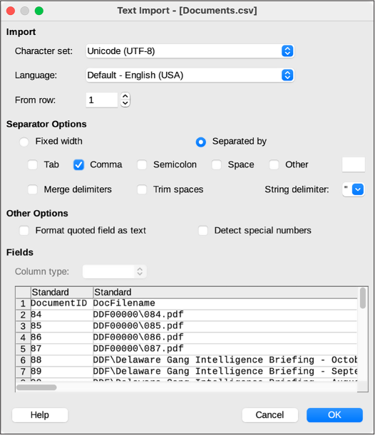
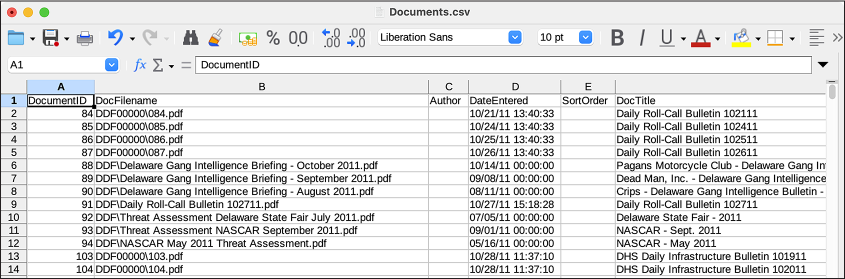
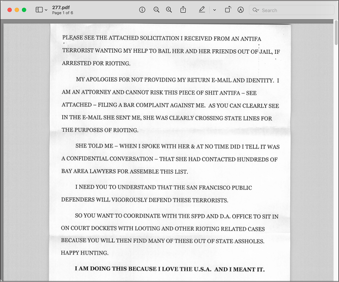
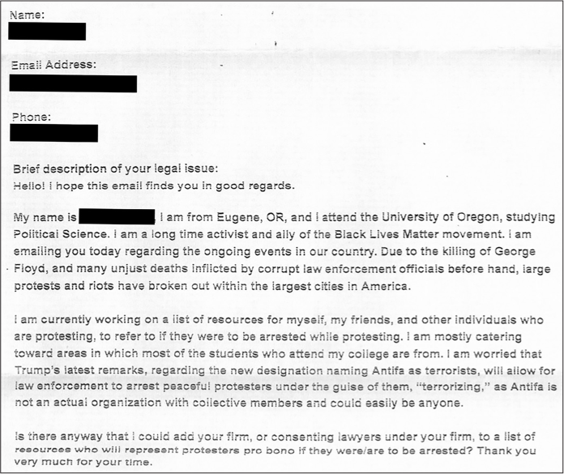
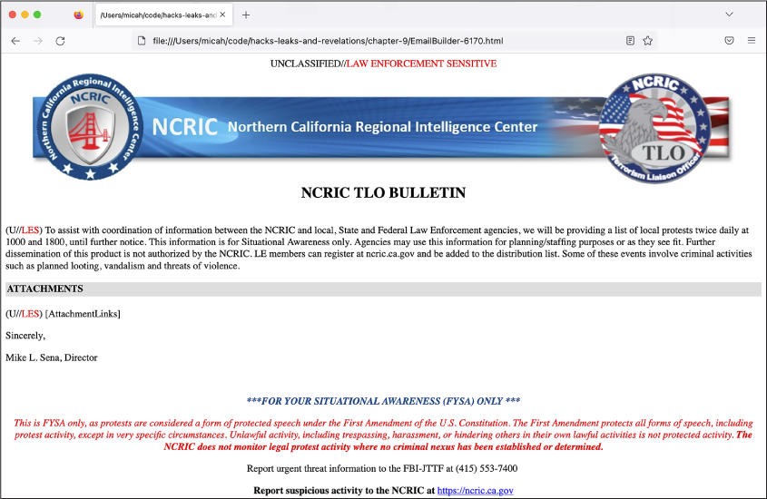
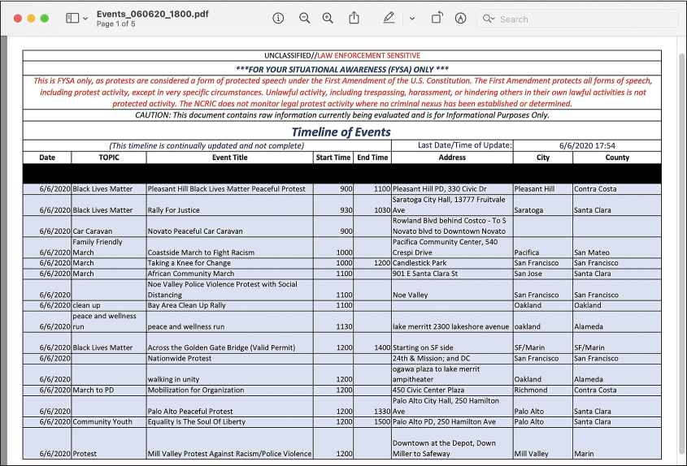
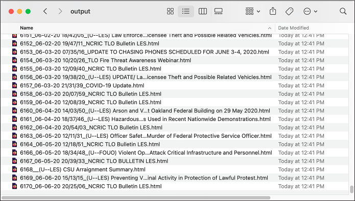
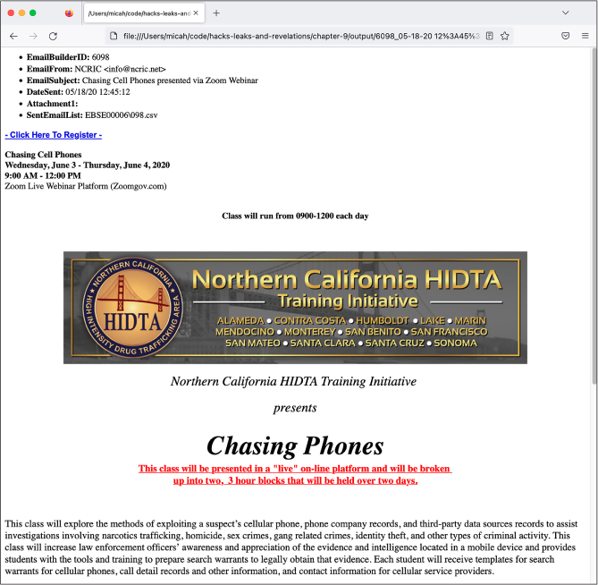
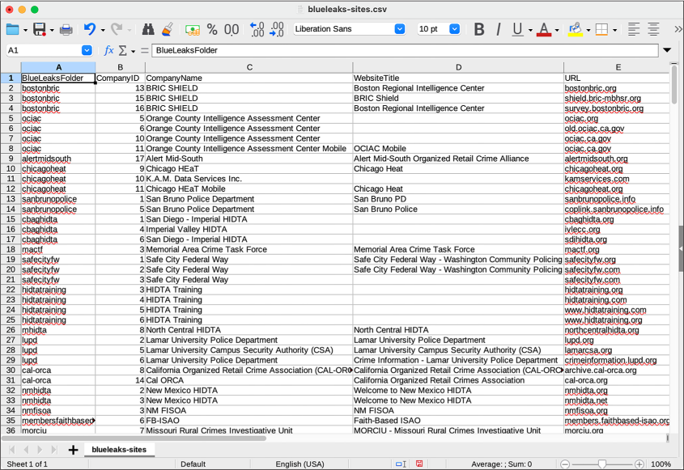

You’ll view CSVs in both graphical spreadsheet and text editing software, write Python code to loop through the rows of a CSV, and save CSVs of your own. You’ll then put this knowledge into practice by digging through the CSVs in the BlueLeaks dataset, focusing on data from the NCRIC fusion center. This is the data I myself have primarily focused on since BlueLeaks was published years ago, but there are over a hundred other folders in the dataset full of newsworthy revelations. By the end of this chapter, you’ll have the tools to continue investigating these folders, as well as similar datasets loaded with CSVs.
Installing Spreadsheet Software
The most user-friendly way to view the contents of a CSV file is to open it using spreadsheet software such as LibreOffice Calc, Microsoft Excel, Apple Numbers, or Google Sheets. Spreadsheet software is a great option to see the data you’re dealing with in an organized way, and it can also be a powerful tool to analyze CSVs. However, in many cases, depending on the data you’re working with, you’ll need to go beyond such software and write custom code to work with CSVs.
If you already have a favorite spreadsheet program, you can use that for the projects in this book. If not, I suggest using LibreOffice Calc since it’s free, open source, and available for Windows, macOS, and Linux; it’s also what I’ve used for the examples in this chapter. Installing LibreOffice (https://www.libreoffice.org) installs a whole suite of office software, including Calc.
Alternatively, Microsoft Excel is a good option, but it costs money and isn’t available for Linux. If you have a Mac, you can also use Apple’s free spreadsheet software, Numbers. Finally, you can consider using Google Sheets, the spreadsheet feature of Google Docs. Google Docs is free and works in Windows, macOS, and Linux, since it’s web-based. The problem with Google Sheets and any other cloud-based spreadsheet software (like the web-based version of Microsoft Excel) is that you have to upload a copy of your CSV file to a third-party service before you can view it. For public datasets like BlueLeaks, this is okay. However, it’s better to use desktop spreadsheet software when you’re dealing with more sensitive datasets.
Spreadsheet software, when used with more complicated spreadsheet formats such as Microsoft Excel files (.xlsx) or ODF Spreadsheet files (.ods), is powerful and feature-rich. It can do math, like summing all of the values in a column, and visualize data, like creating pie charts or line graphs. None of these features are supported in CSV files, though, so I won’t discuss them in this book.
Once you have your spreadsheet software installed, you’re ready to learn more about the structure of CSV files.
Introducing the CSV File Format
You can think of spreadsheets as tables of data. The top row normally
has headers for each column, and the rest of the rows represent data
that matches those headers. CSV is the simplest spreadsheet format. You
can open CSV files using software like Microsoft Excel or LibreOffice
Calc, or you can view them in a text editor and use CLI tools like
grep to search them.
BlueLeaks is full of CSV files, but the original data from the fusion center websites wasn’t in that format. The BlueLeaks dataset includes source code for those websites, and by reviewing that, I discovered that each site had actually stored its data in a Microsoft Access database file. The BlueLeaks hacker exported tables from the Access databases and saved that data in CSV format before leaking it to DDoSecrets.
CSV files are simply text files made up of multiple lines representing rows in a table. Each line contains a list of values, usually separated by commas (hence the name comma-separated values), with each value representing a cell in the spreadsheet. Sometimes a spreadsheet row is referred to as a record, with each cell in that row referred to as a field in that record. Typically, each row contains the same number of cells.
Here’s an example CSV file called city-populations.csv:
City,Country,Population
Tōkyō,Japan,37400000
Delhi,India,28514000
Shanghai,China,25582000
São Paulo,Brazil,21650000
Mexico City,Mexico,21581000
Cairo,Egypt,20076000
You can find a copy of this file in the book’s GitHub repository at https://github.com/micahflee/hacks-leaks-and-revelations/blob/main/chapter-9/city-populations.csv. I’ll use this file as an example CSV later in this chapter, so download it now (or re-enter it) and save it in a folder for this chapter’s exercises.
Table 9-1 shows the data from the city-populations.csv file organized into rows and columns.
Table 9-1: City Populations
| City | Country | Population |
|---|---|---|
| Tōkyō | Japan | 37,400,000 |
| Delhi | India | 28,514,000 |
| Shanghai | China | 25,582,000 |
| São Paulo | Brazil | 21,650,000 |
| Mexico City | Mexico | 21,581,000 |
| Cairo | Egypt | 20,076,000 |
When a value includes commas, it must be surrounded by quotation marks. For example, the values “Hello, World” and “Hola, Mundo” both contain commas. Here’s how they look in a CSV file along with fields for their respective languages:
Language,Greeting
English,"Hello, World"
Español,"Hola, Mundo"
Table 9-2 shows this data organized into rows and columns.
Translations of “Hello, World”
| Language | Greeting |
|---|---|
| English | Hello, World |
| Español | Hola, Mundo |
It’s common to enclose every value in quotes, regardless of whether it includes commas. Here’s another version of the previous spreadsheet, now with every value in quotes:
"Language","Greeting"
"English","Hello, World"
"Español","Hola, Mundo"
As with shell scripting and Python programming, you can escape quotes in
CSVs by using a backslash and double quotes (\"). For example, the value
"Not I," said the cow contains both quotes and commas, so to add it to a CSV file you would
surround the entire value in quotes and escape the inner quotes, like
this:
"\"Not I,\" said the cow"
Because the CSV file format is so simple, it’s one of the most commonly used spreadsheet formats, especially for anyone working with spreadsheets using code. Like CSVs, SQL databases also store tabular data (data that can be represented in a table), so CSVs are a convenient format for exporting tables from them. In fact, all of the CSVs in BlueLeaks are exported SQL tables from the databases that power law enforcement and fusion center websites. (You’ll learn about SQL databases in Chapter 12; for now, you’ll work with the exported CSVs.)
Now that you understand a bit about the CSV file format, let’s take a look at some real CSV data from BlueLeaks.
Exploring CSV Files with Spreadsheet Software and Text Editors
In your graphical file browser (such as Explorer in Windows or Finder in macOS), browse to the BlueLeaks-extracted folder on your USB disk. You’ll start by examining the dediac subfolder, which contains data from the Delaware Information Analysis Center. Scroll through the files in this folder—nearly all of them are CSVs—and open Documents.csv in your graphical spreadsheet software.
When you open a file in LibreOffice Calc or other spreadsheet software, you’ll likely be presented with a window asking you to confirm the settings for this CSV. Figure 9-1 shows the window that pops up when I open Documents.csv in LibreOffice Calc on my Mac.

Figure 9-1: The LibreOffice Calc Text Import settings
The most important setting to select is the correct separator character,
which is, in this and most cases, a comma (,). Some CSVs separate values with
characters other than commas, like semicolons (;) or tabs (\t), though this is rare. In the future
if you aren’t sure which character your CSV uses, you can open the CSV
in a text editor first to check.
Click OK to open the spreadsheet. This one should open quickly, but sometimes CSVs are huge—hundreds of mega- or gigabytes—so you may need to wait several seconds, or even minutes, for a large CSV to finish loading.
Figure 9-2 shows part of the Documents.csv spreadsheet in LibreOffice Calc.

Figure 9-2: Viewing Documents.csv in LibreOffice Calc
This spreadsheet has 23 columns and 6,934 rows (one of which is the header row). At the top of the file, the dates in the DateEntered column are from 2011. You can find the most recent data in a spreadsheet by sorting it, either in ascending (from smaller to bigger) or descending (bigger to smaller) order. I’ll show you how to sort this spreadsheet in LibreOffice Calc, but the instructions should be similar for other spreadsheet software and apply to any spreadsheet you want to sort.
First, since you don’t want to sort the header row, click View ▸ Freeze Cells ▸ Freeze First Row. This should freeze the header row, so now when you scroll up and down, the headers will remain at the top of the file.
Next, you need to pick which column you want to sort by. To see the most recent documents at the top, sort by DateEntered descending. Before sorting this column, you must tell the spreadsheet software that those fields are dates with times and specify how they’re formatted (otherwise, the software might assume they’re strings and sort them alphabetically). Click column D to select all of the cells in that column and then click Data ▸ Text to Columns. This pops up a window that lets you define what type of data is in each column. At the bottom of the window, click the DateEntered column and choose Date (MDY) from the Column Type drop-down, because the dates in this data are formatted with month, then date, then year. Click OK.
Now that the spreadsheet software knows the correct format for the DateEntered cells, you can sort it by this column. Click the DateEntered header cell to select it (make sure not to select the whole column, just the header cell) and then click Data ▸ Sort Descending. This should reorder all of the rows so that the row with the most recent DateEntered is at the top and the one with oldest is at the bottom. In Documents.csv, the most recent documents are from June 6, 2020, during the Black Lives Matter protests. Some of the most recent document titles include “Special Bulletin Planned Protests 060620 1800 UPDATE,” “ANTIFA Sub Groups and Indicators – LES,” and “ANTIFA - Fighting in the Streets.”
I often use graphical spreadsheet programs to search CSVs. In
LibreOffice, as well as in other spreadsheet programs, you can find
specific cells using the Find feature. Press
CTRL-F (or, in macOS,
[<?ace 1a ?>-F), enter your search term, and
press }]{.code_symbol-altENTER. This should search every cell in the spreadsheet
for your term. You can use this method to find a row containing, for
example, a specific ID number or email address.
When you close the spreadsheet, don’t save your changes. It’s good practice to avoid changing original documents in a dataset. If you want to keep a record of your changes, save the file as a copy in either the ODF Spreadsheet (.ods) or Excel (.xlsx) format.
Now let’s look at the same CSV in a text editor instead of spreadsheet software. Here are the first few lines of the Documents.csv file, as viewed in a text editor like VS Code:
DocumentID,DocFilename,Author,DateEntered,SortOrder,DocTitle,Description,ShortDescription,
PageIdentifier,Keywords,DocumentCategoryID,URLLaunchNewBrowser,URL,Featured,YoutubeLink,
YoutubeVideoName,FrontPageText,YouTubeStartTime,DocFileName2,PreviewImage,ForceSaveAsDialog,
OpenInIframe,DeleteDate
84,"DDF00000\084.pdf",,"10/21/11 13:40:33",,"Daily Roll-Call Bulletin 102111",,,52,,36,0,,0,,,,
,,"DPI00000\084.png",0,0,
85,"DDF00000\085.pdf",,"10/24/11 13:40:33",,"Daily Roll-Call Bulletin 102411",,,79,,36,0,,0,,,,
,,"DPI00000\085.png",0,0,
86,"DDF00000\086.pdf",,"10/25/11 13:40:33",,"Daily Roll-Call Bulletin 102511",,,86,,36,0,,0,,,,
,,"DPI00000\086.png",0,0,
--snip--
Because text editors show you only the text when you view a CSV file, without lining up the columns like spreadsheet software does, it’s less clear which value matches to which header for each row. There’s no simple way to manipulate the data, either—you can’t sort it by DateEntered like you can in LibreOffice Calc or Microsoft Excel. However, it’s simple to write code that loads the data from CSVs into dictionaries, allowing you to manipulate it in any way you choose, as you’ll do later in this chapter.
Now that you’re familiar with the structure of CSVs, you’re ready to see how I began my investigation into the BlueLeaks dataset.
My BlueLeaks Investigation
I didn’t even realize that my local police intelligence agency, the Northern California Regional Intelligence Center (NCRIC, pronounced “nick-rick”), existed until I discovered it in the BlueLeaks dataset in June 2020. In this section I describe how I went about my investigation into BlueLeaks, what I discovered in the NCRIC portion of the dataset, and a specific revelation I found in one of the NCRIC CSV files.
Focusing on a Fusion Center
After downloading BlueLeaks, I indexed it in The Intercept’s Intella server to make it easier to search. This allowed me and journalists I worked with to quickly search it for keywords and find interesting documents. However, I could tell that searching for keywords would only get me so far. There was so much data that if I only searched terms like Black Lives Matter, I was bound to miss a lot of it. Moreover, the searches I did make often led me to CSVs, which would take more work to untangle.
BlueLeaks was split into hundreds of folders, each one belonging to a different law enforcement organization. Since almost all of these organizations were unfamiliar to me, though, I couldn’t tell from the names which folder belonged to which organization. I started my own spreadsheet to keep track of this, manually adding rows for each folder as I matched organizations and their websites to it. Eventually, I realized that I could automate this with a Python script.
I also used shell scripting to figure out which folders had the most data, because I guessed they were the largest or most active fusion centers. I quickly discovered that the ncric folder, one of the largest in the dataset, held documents for NCRIC, so that’s where I decided to focus my digging.
Introducing NCRIC
NCRIC, based in San Francisco, shares information between federal agencies, local police departments across Northern California, and private industry partners, including tech companies. As I discovered by combing through the CSVs in this dataset, it also provides services to local cops, like monitoring social media or helping break into locked smartphones, and it hosts events and classes for law enforcement officers.
Using a custom tool I developed called BlueLeaks Explorer, which I’ll discuss in detail in Chapter 10, I examined everything I could find in the ncric folder dated within the 13 days between George Floyd’s murder and when NCRIC was hacked. I discovered that twice a day, NCRIC emailed over 14,000 cops an updated list of Black Lives Matter protests. Local police and other partners could also log in to NCRIC’s website and submit suspicious activity reports (SARs) to distribute to the fusion center’s partners. Local police also requested NCRIC’s help with monitoring the social media accounts of protest organizers and, in two instances, with identifying threats against white female teenagers who were facing harassment after making racist statements and using anti-Black slurs.
Investigating a SAR
By investigating a row from a CSV file, I found a PDF of a scanned letter that turned out to be newsworthy. The letter, written by an unhinged San Francisco–area lawyer to a local district attorney’s office, called a polite student from Oregon an “antifa terrorist.” In this section, I describe how I found this revelation in BlueLeaks, what it contains, and how the BlueLeaks CSVs reference other documents in the dataset.
When I grepped the CSV files in the ncric folder for the word antifa, I found that there were only a handful of references in the files EmailBuilder .csv, Requests.csv, SARs.csv, and Survey.csv. In particular, this row in SARs.csv stood out because it referenced a student protester, allegedly a member of an antifa group, and mentioned “Radicalization/Extremism”:
micah@trapdoor ncric % grep -ri antifa *.csv
--snip--
SARs.csv:14277,"06/05/20 14:20:09","6/5/2020","Marin","The attached letter was received via US Postal Service this morning. The letter was passed on from an anonymous party claiming to be a lawyer who was contacted by [redacted name] who is a University of Oregon student. [Redacted name] appears to be a member of the Antifa group and is assisting in planning protesting efforts in the Bay Area despite living in Oregon.","[redacted IP address]",,"NCRICLawEnforceme ntReporting",,"Unknown",,"[redacted phone number]","f14e1d15-a052-489c-968b-5fd9d38544e1", "20200596","0820",,"Bay Area",,0,,0,0,0,,0,0,,,0,0,0,0,,,,,"[redacted name]",,,,0,,,,,,," [redacted name]","[redacted name]","[redacted name]",,,"Marin County District Attorney's Office",,,,,"SARF100014\277.pdf",,,,,"- Other -”,,,,,,”Letter.pdf”,,,,,,,”[redacted]@marincounty.org","AM","1",,,,,,0,0,"Radicalization/Extremism,Suspicious Incident",,"Emergency Services,Government Facility",,,"No"
--snip--
Looking into the SARs.csv file, I found that it lists one month of SARs submitted to NCRIC. The earliest report was May 6, 2020, and the latest was June 6, 2020, so my guess is that NCRIC retains SARs only for a month.
Try opening this file, ncric/SARs.csv, in your spreadsheet software, and you’ll see that it’s difficult to parse. There are 91 different columns, and some of the cells are filled with so much text that even with a large monitor, you can see only part of a row at a time. To make it easier to read, I copied the content of the BriefSummary cell from the spreadsheet and pasted it into my text editor, something that I frequently needed to do with the CSVs in this dataset before I developed BlueLeaks Explorer. Here are the relevant fields from the row that caught my eye:
SARSid 14277
FormTimeStamp 06/05/20 14:20:09
IncidentDate 6/5/2020
ThreatActivity Radicalization/Extremism,Suspicious Incident
BriefSummary The attached letter was received via US Postal Service this morning. The letter was passed on from an anonymous party claiming to be a lawyer who was contacted by [redacted name] who is a University of Oregon student. [Redacted name] appears to be a member of the Antifa group and is assisting in planning protesting efforts in the Bay Area despite living in Oregon.
Subjects [redacted name]
AgencyOrganizationNameOther Marin County District Attorney’s Office
File1 SARF100014\277.pdf
File1Name Letter.pdf
EmailAddress [redacted]\@marincounty.org
PhoneNumber [redacted phone number]
The SAR listed the full name, email address, and phone number of the person who had submitted it. I looked them up online and discovered that they worked as an investigator for the district attorney’s office in Marin County (just north of San Francisco). On June 5 at 2:20 PM (per the FormTimestamp field), the day before NCRIC was hacked, they logged in to the NCRIC website and submitted the SAR form. They included a PDF called Letter.pdf (per the File1Name field), though the website saved it in the SARF100014 folder as 277.pdf (per the File1 field).
NOTE The server that hosted NCRIC’s website and all of the other BlueLeaks
sites was running Windows, which is why folders in paths are separated
by backslashes (\), like SARF100014\277.pdf, instead
of forward slashes (/).
Each BlueLeaks folder has a subfolder called files, where you can find the files referenced in the CSV. See if you can find the PDF referenced in the File1 field in the ncric folder. It should be at the path ncric/files/SARF100014/277.pdf (see Figure 9-3).

Figure 9-3: A PDF attachment in the SAR submitted by an investigator from the Marin County DA’s office
The PDF shows a letter in all caps mailed to the Marin County DA’s office by a Bay Area attorney: “PLEASE SEE THE ATTACHED SOLICITATION I RECEIVED FROM AN ANTIFA TERRORIST WANTING MY HELP TO BAIL HER AND HER FRIENDS OUT OF JAIL, IF ARRESTED FOR RIOTING.” He explained that he was remaining anonymous because he “CANNOT RISK THIS PIECE OF SHIT ANTIFA […] FILING A BAR COMPLAINT AGAINST ME,” and warned that “THE SAN FRANCISCO PUBLIC DEFENDERS WILL VIGOROUSLY DEFEND THESE TERRORISTS.” He ended his letter, “HAPPY HUNTING.”
Further down in the PDF, the attorney included the solicitation from the “antifa terrorist,” shown in Figure 9-4.

Figure 9-4: The letter that the Oregon student sent to the California lawyer
“I am a long time activist and ally of the Black Lives Matter movement,” the Oregon student wrote. “… Is there anyway [sic] that I could add your firm, or consenting lawyers under your firm, to a list of resources who will represent protesters pro bono if they were/are to be arrested? Thank you very much for your time.” The Marin County DA investigator apparently believed that this was useful enough intelligence that they logged in to their account on NCRIC’s website and submitted it as “suspicious activity” for other law enforcement officers around Northern California to access. Under threat activity, they chose Radicalization/Extremism.
NOTE You can read more about my findings from this SAR in the first article I wrote about BlueLeaks, at https://theintercept.com/2020/07/15/blueleaks-anonymous-ddos-law-enforcement-hack/. To learn more about what I discovered while researching NCRIC in general, check out my in-depth article at https://theintercept.com/2020/08/17/blueleaks-california-ncric-black-lives-matter-protesters/.
In theory, I could have stumbled upon the PDF in Figure 9-3 on its own; I might have just randomly clicked through documents and happened to open ncric/files/SARF100014/277.pdf, the path to the PDF in question. I could also have indexed the ncric folder in Aleph, OCRing all of the documents, and searched for antifa. However, the PDF alone doesn’t explain who uploaded it to the NCRIC website, when and why they uploaded it, and how they described the document. Moreover, if you’re interested in focusing on activity in the fusion center from a specific time period, it’s easier to find which documents are relevant by their timestamps in the CSV files. If you’re researching BlueLeaks yourself, you can quickly find all of the documents associated with a time period by sorting the spreadsheets by date, reading all the rows in the CSVs for that time period, and looking at the documents that those rows reference.
Whenever you find an interesting document in BlueLeaks, search the CSVs for its filename to figure out why that document is there to begin with. It could be an attachment in a SAR, part of a bulk-email message the fusion center sent to thousands of local police, or included for other reasons. In the case of 277.pdf, now you know this document was uploaded as an attachment to a SAR by an investigator in a DA’s office. The CSV provides the investigator’s summary of the document’s contents, along with their contact information, which you can use to reach out to them for comment before publishing your findings.
Now that you’ve seen the type of data SARs.csv contains, you need a way to easily read the long blocks of text in those CSV cells without having to copy and paste them into a text editor. We’ll cover that in Exercise 9-1, but first, let’s have a quick tutorial on how to write code that works with CSV files.
Reading and Writing CSV Files in Python
As you learned in Chapter 8, Python modules
bring extra functionality into the script that you’re writing. It’s easy
to load CSVs and turn each row into a Python dictionary using Python’s
built-in csv module. You’ll
need csv for this chapter’s
exercises, so import it using the following command:
import csv
After importing it, you can take advantage of its functionality. The
csv features I use the most
are csv.DictReader(), which
lets you parse rows of a CSV as dictionaries, and
csv.DictWriter(), which lets
you save your own CSVs from data stored in dictionaries.
The following code loads a CSV file and loops through its rows by using
csv.DictReader():
with open(csv_path) as f:
reader = csv.DictReader(f)
for row in reader:
print(row)
This code assumes the path to the CSV filename
is in the csv_path variable,
which could be a string that you hardcoded or a CLI argument you passed
into your program. After opening the CSV file with
open(csv _path) and storing
the file objects as f, the
code defines a new variable called reader and sets its value to
csv.DictReader(f), which
prepares you to read rows from this CSV. The reader object acts a little like a list of
dictionaries, where each dictionary represents a row. Although it’s not
actually a list, you can use a for loop to loop through it as if it were.
Inside the for loop,
row is a dictionary that
represents the data in a row from the spreadsheet.
The process of saving new CSVs is similar to loading them, except you
use csv.DictWriter(). For
example, the following code uses Python to save the
city-populations.csv file discussed in the Introducing the CSV File
Format section earlier in this chapter:
headers = ["City", "Country", "Population"]
with open(csv_path, "w") as f:
writer = csv.DictWriter(f, fieldnames=headers)
writer.writeheader()
writer.writerow({"City": "Tōkyō", "Country": "Japan", "Population": 37400000})
writer.writerow({"City": "Delhi", "Country": "India", "Population": 28514000})
writer.writerow({"City": "Shanghai", "Country": "China", "Population": 25582000})
writer.writerow({"City": "São Paulo", "Country": "Brazil", "Population": 21650000})
writer.writerow({"City": "Mexico City", "Country": "Mexico", "Population": 21581000})
writer.writerow({"City": "Cairo", "Country": "Egypt", "Population": 20076000})
This code first defines the headers of the spreadsheet in the list
headers, then opens the
output file (csv_path) for
writing. Creating a csv.DictWriter() object allows you to save data into
the CSV. You must pass the headers in as a keyword argument called
fieldnames. You must also
run writer .writeheader(),
which saves the header row to the CSV file, before writing any of the
data rows.
You can then add rows to the spreadsheet by running
writer.writerow(), passing
in a dictionary whose keys match your headers. For example, the first
call of writer.writerow()
passes in the dictionary
{"City": "Tōkyō", "Country": "Japan", "Population": 37400000}. The keys for this dictionary are the
same as the headers for the CSV: City, Country, and Population.
In the following exercises, you’ll use your new CSV programming skills to write scripts that make the data hidden in BlueLeaks CSVs easier to read and understand.
NOTE To learn more about the csv module, you can find the full documentation, including plenty of example code, at https://docs.python.org/3/library/csv.html.
Exercise 9-1: Make BlueLeaks CSVs More Readable
While it’s easier to read SARs.csv in a spreadsheet program than in a text editor, it’s still quite difficult. As mentioned earlier, there are 91 columns (though most of their values are blank), and some of the text fields, like BriefSummary, contain way too much text to see at one time in a spreadsheet cell. In this exercise, you’ll write a script that makes SARs.csv (or any CSV with similar content) easier to read by showing you the data a single row at a time.
This exercise is designed not just to show you how to work with the SARs.csv file, but to give you practice looping through the rows and fields in a CSV. These skills will come in handy whenever you write code that reads data from CSVs.
For a challenge, you could try programming your own script to meet the following requirements:
- Make this script accept an argument called
csv_pathusing Click, which you first learned to use in Exercise 8-3. - Import the
csvmodule and loop through all of the rows in the CSV located atcsv_path, loading each row as a dictionary, as discussed in the previous section. - For each row, display all of the non-empty values for its columns.
If a value is empty, meaning it’s an empty string (
""), skip it. There’s no reason to display all of the columns when so many of them have blank values. - Display each field on its own line. For example, one line could show
SARSid: 14277and the next line could showFormTimeStamp: 06/05/20 14:20:09. - Output a separator line like
===between each row so that you can tell rows apart.
Alternatively, follow along with the rest of this exercise and I’ll walk you through the programming process. Start with the usual Python script template in a file called exercise-9-1.py:
def main():
pass
if __name__ == "__main__":
main()
Next, you’ll modify your script to accept the csv_path argument.
Accept the CSV Path as an Argument
Instead of hardcoding the path to a specific CSV, let’s use Click to accept the path as an argument. Here’s the code that does that (with modifications shown in bold):
import click
@click.command()
@click.argument("csv_path")
def main(csv_path):
"""Make BlueLeaks CSVs easier to read"""
print(f"CSV path: {csv_path}")
if __name__ == "__main__":
main()
Just like in Exercise 8-4, this code imports the click module, adds Click decorators before
the main() function to turn
it into a command that accepts the csv_path argument, and adds a docstring. For
now, it also displays the value of csv_path so you can test if the program works.
Run the code to test it as follows:
micah@trapdoor chapter-9 % python3 exercise-9-1.py some-csv-path.csv
CSV path: some-csv-path.csv
The script just displays the CSV path that was passed in. So far, so good.
Loop Through the CSV Rows
Next, you’ll modify the code to open the CSV in csv_path, and, using the csv module, create a
csv.DictReader() object to
loop through the rows of that CSV:
import click
import csv
@click.command()
@click.argument("csv_path")
def main(csv_path):
"""Make BlueLeaks CSVs easier to read"""
with open(csv_path, "r") as f:
reader = csv.DictReader(f)
for row in reader:
print(row)
if __name__ == "__main__":
main()
This code now imports the csv module at the top. When the
main() function runs, the
code opens the file at csv_path for reading, creating a file object
variable called f. As noted
in Reading and Writing CSV Files in Python, you can use
csv.DictReader() to loop
through a CSV file, getting access to each row as a dictionary. The code
does this next, creating a variable called reader and setting it equal to
csv.DictReader(f). Using
reader, the code then loops
through each row and displays the dictionary containing its data.
Test the code again, this time passing in the path to SARs.csv as the CLI argument. Make sure you use the correct path for your copy of the BlueLeaks dataset:
micah@trapdoor chapter-9 % python3 exercise-9-1.py /Volumes/datasets/BlueLeaks-extracted/ncric/
SARs.csv
{'SARSid': '14166', 'FormTimeStamp': '05/14/20 19:15:03', 'IncidentDate': '2020-05-11',
'County': 'Santa Clara', 'BriefSummary': '*INFO ONLY- no action required* \n\nThe San Francisco
PD was contacted by the CIA Threat Management Unit regarding a suspicious write-in to the
CIA\'s public website apparently by a subject [redacted name] (DOB: [redacted birthdate]). See
details below.\n\n-------- Original message --------\nFrom: ADAMCP4 \nDate: 5/13/20 12:17
(GMT-08:00)\nTo: "[redacted name] (POL)" \nSubject: CIA Passing Potential Threat Information\
nThis message is from outside the City email system. Do not open links or attachments from
untrusted sources.\nGood afternoon,\nPer our conversation, Mr. [redacted name] wrote in to
CIA's public website with the following two messages. A CLEAR report showed Mr. [redacted
name]'s address to be in Dixon, CA. Dixon, CA police made contact with the Subject's mother
who reported she has not had contact with him in quite some time and last knew him to be in the
Bay area, likely off his medication. She reported he suffers from bi-polar disorder.
--snip--
The output shows that during each loop, the row variable is a dictionary containing
the values for that row. So far, the code is simply displaying this
whole dictionary. This is a good start, but it still doesn’t make the
text much easier to read. To do that, you’ll display each field on its
own row.
Display CSV Fields on Separate Lines
The following modified code displays each row separately:
import click
import csv
@click.command()
@click.argument("csv_path")
def main(csv_path):
"""Make BlueLeaks CSVs easier to read"""
with open(csv_path, "r") as f:
reader = csv.DictReader(f)
for row in reader:
for key in row:
if row[key] != "":
print(f"{key}: {row[key]}")
print("===")
if __name__ == "__main__":
main()
Rather than just displaying the row dictionary, this code loops through
all of its keys, storing each in the variable key. Since key is the key to the dictionary
row, you can look up its
value by using row[key]. You
only want to display fields that aren’t
blank, so after making sure that this key doesn’t have a blank value,
the code displays both it and the value. Finally, after it has finished
looping through all of the keys in each row, the code displays the
separator === between the
rows.
You can find a copy of the complete script at https://github.com/micahflee/hacks-leaks-and-revelations/blob/main/chapter-9/exercise-9-1.py. Run the final script like so:
micah@trapdoor chapter-9 % python3 exercise-9-1.py /Volumes/datasets/BlueLeaks-extracted/
ncric/SARs.csv
SARSid: 14166
FormTimeStamp: 05/14/20 19:15:03
IncidentDate: 2020-05-11
County: Santa Clara
BriefSummary: *INFO ONLY- no action required*
The San Francisco PD was contacted by the CIA Threat Management Unit regarding a suspicious
write-in to the CIA's public website apparently by a subject [redacted name] (DOB: [redacted
birthdate]). See details below.
-------- Original message --------
From: ADAMCP4
Date: 5/13/20 12:17 (GMT-08:00)
To: "[redacted name] (POL)"
Subject: CIA Passing Potential Threat Information
This message is from outside the City email system. Do not open links or attachments from
untrusted sources.
Good afternoon,
Per our conversation, Mr. [redacted name] wrote in to CIA's public website with the following
two messages. A CLEAR report showed Mr. [redacted name]'s address to be in Dixon, CA. Dixon,
CA police made contact with the Subject's mother who reported she has not had contact with him
in quite some time and last knew him to be in the Bay area, likely off his medication. She
reported he suffers from bi-polar disorder.
--snip--
ThreatActivityOther: Suspicious write-in received by the CIA
ImpactedEntity: Government Facility
===
SARSid: 14167
FormTimeStamp: 05/15/20 10:46:00
IncidentDate: 5/14/2020
County: Sonoma
BriefSummary: Handheld radio went missing. Radio was in the dozer tender or in the office of
the Santa Rosa shop at station 41. The dozer tender was parked outside of the shop. There has
been unknown individuals seen passing on the compound near the shop. Dozer tender did not
appear to have been broken into. Dozer tender is usually locked but could have been missed
while the operator was off duty. Unsure of when exactly the radio went missing. Could of been
anytime within the last month.
--snip--
This time, the output should display === between the rows and display each
field of a row on its own line. If there are any blank fields, the
program skips them.
Using the command line skills you learned in Chapters 3 and 4, redirect the output into a file with the following command:
python3 exercise-9-1.py /Volumes/datasets/BlueLeaks-extracted/ncric/SARs.csv > SARs.txt
This should run your script again, this time saving the output into SARs.txt instead of displaying it in your terminal. Now you can easily scroll through the saved output in a text editor like VS Code and search it for keywords to learn about the “suspicious activity” that occurred in Northern California from May 6 to June 6, 2020.
Next we’ll move on from SARs to explore another important spreadsheet in NCRIC: EmailBuilder.csv.
How to Read Bulk Email from Fusion Centers
The primary purpose of fusion centers is to share information between local, state, and federal law enforcement agencies. They do this, essentially, by sending bulk email to a large list of local police officers. You can find the content of this email for all sites in BlueLeaks, including NCRIC, in the EmailBuilder.csv file located in each site’s folder. These files include the content of all of the bulk-email messages each fusion center sent until June 6, 2020, when it was hacked.
Some of these messages are security bulletins from federal agencies like the FBI or the Department of Homeland Security (DHS). Others contain content directly created by the fusion center—for example, NCRIC and other fusion centers around the US generated detailed daily lists of protests against police brutality during the summer of 2020. For the 13 days of NCRIC data that I looked at in detail, over half of the bulk email contained information about largely peaceful protests.
The SARs spreadsheet contains plaintext data, so it’s easy to read in a text editor. But the bulk-email spreadsheet contains data in HyperText Markup Language (HTML) format, making it difficult to read unless you use a web browser. In this section, you’ll learn to more easily read the HTML content of NCRIC’s bulk email, find the recipients of each email, and find the documents attached to the email messages. Open ncric/EmailBuilder.csv in your spreadsheet software to follow along.
Lists of Black Lives Matter Demonstrations
Most of the intelligence on Black Lives Matter protests flowed through NCRIC’s Terrorism Liaison Officer (TLO) program, whose purpose is to keep the intelligence center’s members “engaged & knowledgeable about current terrorist tactics, techniques & trends, regional crime trends & threats, and Officer safety information,” according to the TLO page on NCRIC’s website. During the summer of 2020, this counterterrorism program didn’t focus on terrorism so much as upcoming racial justice protests.
This section describes the twice-daily lists of upcoming protests that TLO sent to thousands of local cops. Not only is this incredibly newsworthy—a counterterrorism program abused to monitor racial justice protests—but these were the most common bulk-email messages that NCRIC sent during the 13-day period I examined.
For example, here are the most interesting fields from the most recent row in ncric/EmailBuilder.csv (this CSV has 81 columns in total, most of which didn’t contain any relevant information):
EmailBuilderID 6170
EmailFrom NCRIC <info@ncric.net>
EmailSubject NCRIC TLO Bulletin LES
EmailBody <base href=”https://ncric.ca.gov/”><div style=”font-family: times; text-align: center;”><font face=”Calibri, Times”>UNCLASSIFIED//<font color=”#ee0000”>LAW ENFORCEMENT SENSITIVE</font></font></div>[…]
Attachment1 EBAT1\Events_060620_1800.pdf
DateSent 06/06/20 20:25:06
EmailTable Registrations
SentEmailList EBSE00006\170.csv
This row tells us that on the evening of June 6, 2020, NCRIC sent an email with the subject line “NCRIC TLO Bulletin LES” to the list of people described in EBSE00006\170.csv (LES stands for Law Enforcement Sensitive). The email included the PDF attachment located at EBAT1\Events_060620_1800.pdf.
The body of the email is the HTML in the EmailBody column. HTML is the markup language that describes web pages, so it can be hard to make sense of when you’re not viewing it in a web browser. To read this email body, in your text editor, create a new file called EmailBuilder-6170.html (since 6170 is the EmailBuilderID). Copy the content of the EmailBody field from your spreadsheet software for this row, paste it into this file, and save it. You can now open this file in a web browser to view it, but before you do that, you may want to read the Covering Your Tracks with a VPN Service box to consider mitigating what information you might leak by opening it.
COVERING YOUR TRACKS WITH A VPN SERVICE
The BlueLeaks CSV files are full of HTML code, such as the EmailBody field in the
EmailBuilder.csvfiles. Many of these blocks of HTML include embedded images. If you read through the HTML code in the EmailBody cell in the preceding example, you’ll see that it loads an image hosted on NCRIC’s server at the URL https://ncric.org/html/Picture2.jpg?135653. Viewing HTML from BlueLeaks in a web browser makes it much easier to read and understand compared to trying to read the HTML code directly, but it will also cause your computer to make an internet request to the law enforcement servers themselves. These servers will most likely log your IP address, leaving clues that you’re investigating them.For the BlueLeaks dataset, it doesn’t matter much if the fusion center servers track your IP address. It’s not illegal to load images off of law enforcement websites. For more sensitive datasets, however, it’s prudent to hide your IP address from organizations you’re investigating. You can load these images while hiding your real IP address by connecting to a virtual private network (VPN) service, which reroutes your internet traffic through its own server, then forwards your traffic to those websites. This leaves the VPN server’s IP address, rather than your own, in the websites’ web logs.
For example, say you load the EmailBuilder-6170.html file in your web browser from your home in San Francisco. If you load images hosted on https://ncric.org, a San Francisco IP address from a residential neighborhood will show up in the website’s logs. The site might be able to determine that this IP address belongs to you by sending a data request to your internet service provider, for example. If you first connect to a VPN, however—one in New York, let’s say—then they’ll see a New York IP address from a data center in their logs instead. They’ll still know that someone loaded the image, but it won’t be immediately obvious that you loaded the image. Everyone using that VPN service shares its IP address, making it harder to track down individual users.
While VPNs may make you anonymous from the websites you’re visiting, they don’t make you anonymous from the VPN provider itself. Use a trustworthy VPN provider that you believe isn’t logging your traffic and selling it. Additionally, contrary to popular opinion, commercial VPN services don’t prevent websites from tracking your browsing habits; that’s mostly done using a technology called cookies. In other words, VPNs don’t stop the Googles and Facebooks of the world from following you around the web.
Consumer Reports publishes in-depth reviews of different VPN services, comparing them on overall privacy and security, whether they’ve had public security audits, whether they’re open source, and whether they include misleading marketing. VPN services normally cost a few dollars a month. For the most part, I recommend avoiding free VPNs; they’re nearly all scams set up to spy on their users and sell their data, or even to inject advertisements into web pages users visit. The only exception I know of are VPNs powered by the open source software Bitmask, like the one run by the Seattle-based tech collective Riseup. You can learn more about Bitmask from https://bitmask.net, and you can learn about Riseup’s free VPN service at https://riseup.net/en/vpn.
Whether or not you’ve connected to a VPN service (the choice is yours), open EmailBuilder-6170.html using a web browser by double-clicking on it in your file manager. Figure 9-5 shows what it looks like in a web browser.

Figure 9-5: HTML from the EmailBody field in a row of EmailBuilder.csv, viewed in a web browser`
As you can see from the screenshot, this email body is a template, not the email itself. The HTML files stored inside CSVs for BlueLeaks sites are all templates. When sending the email, the NCRIC site would replace [AttachmentLinks] with the actual links to the email attachments as well as replacing other placeholders in the template. The attachments themselves are listed as fields in the CSV.
This email contained one attachment, as noted in the Attachment1 field of the most recent row in EmailBuilder.csv: the PDF file EBAT1\Events_060620_1800.pdf. Figure 9-6 shows the first page of that document.
The NCRIC Terrorism Liaison Officer program distributed this list to local police across Northern California. The events included Novato Peaceful Car Caravan, Taking a Knee for Change, and the Noe Valley Police Violence Protest with Social Distancing (the protests took place during the COVID-19 pandemic, after all).

Figure 9-6: A list of upcoming Black Lives Matter protests in the file Events_060620_1800.pdf
You can use the SentEmailList and EmailTable values to discover how many, and exactly which, local police officers received these daily bulletins. The value of SentEmailList is the path to a CSV file itself: EBSE00006\170.csv. When you open that CSV file (it’s in ncric/files), you can see that it has 14,459 rows (one of which is the header) and looks like this:
IDs,Registrations
63861
63862
63929
63930
--snip--
In short, this CSV contains a huge list of ID numbers. The value of
EmailTable in the EmailBuilder.csv row is Registrations, which is a good hint. Since I knew
that these IDs must match up to rows in some other table, I decided to
check the file Registrations.csv.
Open that spreadsheet yourself at ncric/Registrations.csv. It has 185 columns and over 29,000 rows, apparently listing everyone who had an account on NCRIC’s website. It includes each user’s full name; the agency they work for and whether it’s local, state, federal, or military; their email address, physical address, and cell phone number; their supervisor’s name and contact information; their password hash; and other details.
The first column of Registrations.csv is called RegistrationsID. Each ID in the EBSE00006\170.csv file can be cross-referenced with one of these registrations. For example, the person in Registrations.csv with the RegistrationsID 63861 works at the Santa Clara County Sheriff’s Office, lives in San Jose, has an email address at the domain pro.sccgov.org, and has a phone number with a 408 area code. In other words, NCRIC sent the email to this list of 14,458 contacts, whose contact details can be found in the Registrations.csv file. The BlueLeaks dataset includes this information about everyone who received bulk email through any of the websites. In Exercise 9-3, when you read through bulk email found in BlueLeaks, you’ll be able to look up exactly who received these email messages.
“Intelligence” Memos from the FBI and DHS
As mentioned earlier, in addition to detailed lists of upcoming protests, NCRIC also frequently forwarded memos from its federal partners—agencies like the FBI and DHS—to its list of over 14,000 local cops. These memos largely contained internet rumors, hoaxes that had already been debunked but that federal agencies apparently fell for, and warnings about violence from protesters that didn’t materialize.
For example, in the row in EmailBuilder.csv with the EmailBuilderID of 6169, the email body says, “The NCRIC is disseminating this (U//LES) Update on behalf of the FBI.” The Attachment1 value in that row is EBAT1\SITREP-6-JUN-1300_OPE.pdf, an unclassified FBI document dated June 6, 2020. The document is full of cherry-picked quotes from social media posts threatening violence, but without any context. There was no way of knowing how many followers an account had, how much engagement their post had, or even if they were parodies.
The “Social Media Exploitation (SOMEX)” section of this FBI document describes people using Facebook, Snapchat, and Instagram to post “flyers seeking to hire ‘professional anarchists.’ ” This appears to reference an internet hoax from late May 2020. In fact, I found multiple articles debunking this hoax on fact-checking sites, including Snopes, PolitiFact, and Reuters, dated a week before the FBI distributed this memo. The fake recruitment flyer offers to compensate “professional anarchists” with \$200 per direct action, and includes the text “Funded by George Soros.” (Antisemitic right-wing Americans frequently and falsely claim that Soros, a Jewish billionaire, funds left-wing protesters.) The flyer also included the phone number for a local branch of the Democratic Party. Both this local Democratic Party branch and Soros’s Open Society Foundations confirmed that the flyer was a fake, but this didn’t stop the FBI from distributing it to NCRIC, which disseminated it to 14,458 local police across Northern California.
The DHS also sent several memos to NCRIC to distribute to the center’s list. For example, take a look at the row in EmailBuilder.csv with the EmailBuilderID of 6144. The email body says, “The NCRIC is disseminating the Intelligence Note ‘(U//FOUO) Some Violent Opportunists Probably Engaging in Organized Activities’ on behalf of DHS,” and the attached document is EBAT1\(U—FOUO) IN - Some Violent Opportunists Probably Engaging in Organized Activities 06012020.pdf.
The attached PDF declares, “As the protests persist, we assess that the organized violent opportunists—including suspected anarchist extremists—could increasingly perpetrate nationwide targeting of law enforcement and critical infrastructure.” (This didn’t happen.) The memo goes on to say that an NYPD official “had strong evidence that suspected anarchist groups had planned to incite violence at protests, including by using encrypted communications.” Incidentally, if you completed Exercise 2-2 and installed Signal, you too are now a user of encrypted communications.
As noted in Chapter 1, it’s important to reach out to the people you’re investigating to get their side of the story. Mike Sena, NCRIC’s executive director, told me that his intelligence agency was monitoring Black Lives Matters protests in order to make sure that they remained safe. “We weren’t keeping track of the protests themselves, but we were identifying where we were gonna have gatherings of people,” he said. “That’s our concern; we want to make sure the events are safe—and if there are any threats that come up that may be associated with any of those events that we’re able to get that threat data to whatever agency may have protection responsibilities.”
It’s also good practice to contact outside experts—those who know more about the subject matter than you do—for comment. Vasudha Talla, a senior staff attorney with the American Civil Liberties Union of Northern California, told me, “Really what we have here is overbroad collection and dissemination of people’s protected First Amendment activity, and it’s untethered to any basis in the law.”
As you can see, there are a lot of newsworthy details in EmailBuilder.csv. However, it’s still somewhat difficult to work with, especially because of the HTML email bodies. Soon you’ll write some code to make all of the bulk email easier to read. To do that, first you will need to learn the basics of HTML.
A Brief HTML Primer
In the following exercise, you’ll write some Python code that in turn writes some HTML code. This section covers just enough HTML syntax to get you through this chapter.
HTML is made up of components called tags. For example, consider the following HTML:
<p>Hello world</p>
This code opens a <p> tag
(which represents a paragraph), includes some content (the text
Hello world), and then
closes the <p> tag with
</p>. You open a tag with
<``tag-name``> and close it with </``tag-name``>.
HTML typically includes tags inside of tags inside of tags. It’s common to indent HTML code for legibility, but unlike in Python, indenting is completely optional. Here’s an example of a simple web page in HTML, indented to make it easier to read:
<html>
<head>
<title>My Super Cool Web Page</title>
</head>
<body>
<h1>Under Construction</h1>
<p>This web page is under construction!</p>
</body>
</html>
The whole page is wrapped in the <html> tag. Inside that, there’s a
<head> tag, which includes
metadata about the web page, and then a <body> tag, which includes the content of the
web page. The <title> tag is
a metadata tag that describes the title of the web page, which is what’s
displayed in the browser tab itself. Inside the <body>, the biggest heading is <h1>, followed by a <p> paragraph.
There are plenty of other tags in HTML, but in the following exercise,
you’ll use just two more: <ul> and <li>. The <ul> tag stands for “unordered list,” and
it’s how you make bulleted lists in HTML. Inside the <ul> tag are <li> tags, which stand for “list item.” For
example, here’s some HTML for a simple bulleted list:
<ul>
<li>Bash</li>
<li>Python</li>
<li>HTML</li>
</ul>
When displayed in a web browser, that HTML code would look like this:
- Bash
- Python
- HTML
The less-than and greater-than characters (< and >) are used to open and close tags in
HTML. If you want to display literal less-than or greater-than
characters in HTML, you have to HTML escape them. This is similar to
escaping in shell scripts and Python code, but the syntax is different.
Escape < by replacing it
with < and escape
> by replacing it with
>. For example, here’s
some HTML code that displays the text I <3 you in a paragraph:
<p>I <3 you</p>
There are a few other special characters in HTML that are each escaped
in their own way. For example, you’d use & to escape an ampersand (&).
In the next exercise, you’ll make the email messages in EmailBuilder.csv easier to read by writing a script that automatically saves an HTML file for each one. This will also make it much simpler for you to find the newsworthy ones.
Exercise 9-2: Make Bulk Email Readable
For this exercise, you’ll write a script similar to the one you wrote in Exercise 9-1, but instead of displaying text output to the screen, you’ll save HTML output to files. This allows you to look through a folder full of HTML files, each one a different bulk email, open these files in a web browser, and read them in a more legible format. While this particular exercise is designed specifically for the EmailBuilder.csv files in BlueLeaks, it’s common to find HTML in datasets, so being able to write a similar script could help you in the future.
For a challenge, you can try programming your own script to meet the following requirements:
- Make this script accept two arguments called
emailbuilder_csv_pathandoutput_folder_pathusing Click. Theemailbuilder_csv_pathargument should be the path to an EmailBuilder.csv file, and theoutput_folder_pathargument should be the path to a folder in which to save the HTML files. - Make sure the folder at
output_folder_pathexists by importing theosmodule and runningos.makedirs(output_folder_path, exist_ok=True). - Import the
csvmodule and loop through all of the rows in the CSV located atemailbuilder_csv_path, loading each row as a dictionary. - For each row, save a new HTML file. This file should include information from the bulk-email fields most relevant for your purposes: EmailBuilderID, EmailFrom, EmailSubject, DateSent, Attachment1, and SentEmailList. It should also include the HTML body of the email itself, EmailBody.
Otherwise, follow along with the rest of this exercise and I’ll walk you through the programming process. Start with the usual Python script template in a file called exercise-9-2.py:
def main():
pass
if __name__ == "__main__":
main()
Next, you’ll modify your script to make the script accept command line arguments using Click.
Accept the Command Line Arguments
The following code has been modified to import the click module and accept some command line
arguments:
import click
@click.command()
@click.argument("emailbuilder_csv_path")
@click.argument("output_folder_path")
def main(emailbuilder_csv_path, output_folder_path):
"""Make bulk email in BlueLeaks easier to read"""
print(f"Path to EmailBuilder.csv: {emailbuilder_csv_path}")
print(f"Output folder path: {output_folder_path}")
if __name__ == "__main__":
main()
First, the code imports the click module, and then it uses Click
decorators to make the main() function a Click command that accepts
two arguments, emailbuilder_csv_path and output_folder_path. The code also has two
print() statements that
display the values of the two arguments. The
emailbuilder_csv_path
argument should point to the path of a BlueLeaks EmailBuilder.csv,
which you’ll load and loop through, and the
output_folder _path argument
should be the path to a folder in which you’ll store the HTML files for
the bulk-email messages.
Test your code and make sure it’s working as expected so far, replacing the path to EmailBuilder.csv with the appropriate path for your computer:
micah@trapdoor chapter-9 % python3 exercise-9-2.py /Volumes/datasets/BlueLeaks-extracted/
ncric/EmailBuilder.csv output
Path to EmailBuilder.csv: /media/micah/datasets/BlueLeaks-extracted/ncric/EmailBuilder.csv
Output folder path: output
As expected, the script displays the values of the two arguments.
Create the Output Folder
Next, use Python to create the folder in output_folder_path where you’ll save the HTML files:
import click
import os
@click.command()
@click.argument("emailbuilder_csv_path")
@click.argument("output_folder_path")
def main(emailbuilder_csv_path, output_folder_path):
"""Make bulk emails in BlueLeaks easier to read"""
os.makedirs(output_folder_path, exist_ok=True)
if __name__ == "__main__":
main()
To be able to use the os.makedirs() function, first the script imports the
os module. Then it uses the
os.makedirs() function to
create a new folder in Python, passing in the path to the folder to
create, output_folder_path.
The exists_ok=True keyword argument tells this function
that it’s fine if that folder already exists; otherwise, if the folder
already existed, the script would crash with an error message. This way,
the first time you run this script with a specific output folder, it
will create that folder and use it to store the HTML files. If you run
the script again in the future with that same output folder, it will use
the folder that’s already there.
When you run the complete script at the end of this exercise, you’ll be able to browse the files in this folder to read through the bulk-email messages sent by a fusion center.
Define the Filename for Each Row
The goal of this script is to save an HTML file for each row in the
spreadsheet. To do this, you’ll need to load the CSV, loop through its
rows, and figure out the filename for each HTML file that you’re going
to save. Next, define the filename variable, naming each HTML file based
on data that you found in that row. To do so, make the following
modifications:
import click
import os
import csv
@click.command()
@click.argument("emailbuilder_csv_path")
@click.argument("output_folder_path")
def main(emailbuilder_csv_path, output_folder_path):
"""Make bulk emails in BlueLeaks easier to read"""
os.makedirs(output_folder_path, exist_ok=True)
with open(emailbuilder_csv_path) as f:
reader = csv.DictReader(f)
for row in reader:
filename = (
f"{row['EmailBuilderID']}_{row['DateSent']}_{row['EmailSubject']}.html"
)
filename = filename.replace("/", "-")
filename = os.path.join(output_folder_path, filename)
print(filename)
if __name__ == "__main__":
main()
The script starts by importing the csv module. As in the previous exercise,
the code then opens the CSV file and creates a CSV reader using
csv.DictReader(). Using a
for loop, the code loops
through each row in the CSV.
Rather than just displaying information, you ultimately want to save
each row as an HTML file. To prepare to write the code that actually
generates those files in the next section, this code defines a
filename variable with the
name of the unique HTML file to be generated for each row. In
order to make it unique, the code defines
filename using the current
row’s EmailBuilderID, DateSent, and EmailSubject fields, and ends it
with the.html file
extension. For example, according to this format, the filename for the
bulk email described in the previous section would be 6170_06/06/20
20:25:06_NCRIC TLO Bulletin LES.html.
The code defines filename as
an f-string surrounded in double quotes ("). The variables inside it, like
row["EmailSubject"], have
quotes of their own, but you can’t use the double-quote character inside
a double-quoted f-string without Python mistakenly thinking you’re
closing the f-string. Instead, this code uses single quotes (') for the variables within the
f-string: row['EmailSubject'].
The slash characters (/)
contained in the DateSent column are invalid characters for filenames
because slashes separate folders in a path. To address this, the line
filename = filename.replace("/", "-") replaces any slashes it finds in the
filename with dash characters (-). This generates the valid filename
6170_06-06-20 20:25:06_NCRIC TLO Bulletin LES.html.
Finally, this code uses os.path.join(), discussed in Chapter
8, to append filename to the end of
output_folder_path, giving
you the complete path to the file you’re going to write. You’ll
ultimately save the HTML file in this path. For example, if the filename
output_folder_path is
output and
filename is
6170_06-06-20 20:25:06_NCRIC TLO Bulletin LES.html, os.path.join() updates filename to be
output/6170_06-06-20 20:25:06_NCRIC TLO Bulletin LES.html.
To make sure everything is working so far, the code displays this final filename. Pause and test your code, using the correct filepath for your operating system:
micah@trapdoor chapter-9 % python3 exercise-9-2.py /Volumes/datasets/BlueLeaks-extracted/
ncric/EmailBuilder.csv output
output/4867_09-04-18 09:13:49_2018 CNOA Training Institute.html
output/4868_09-04-18 14:33:27_SMS Important.html
output/4869_09-04-18 14:47:52_Brian SMS from Netsential.html
output/4870_09-05-18 12:57:23_(U--LES) Officer Safety-Welfare Check Bulletin - Wesley Drake GRIFFIN.html
--snip--
The output should show a unique filename for each row in the EmailBuilder.csv spreadsheet. All you need to do now is actually write those HTML files.
Write the HTML Version of Each Bulk Email
The purpose of saving each row of EmailBuilder.csv as an HTML file is to more easily read these bulk-email messages by loading the HTML in a web browser. You’ll obviously want to see the email body, but it would also be helpful to display some basic metadata about the email: the date it was sent, the subject, and so on. The following code writes the HTML files, automatically filling in both the metadata and the email body with data from the CSV:
import click
import os
import csv
import html
@click.command()
@click.argument("emailbuilder_csv_path")
@click.argument("output_folder_path")
def main(emailbuilder_csv_path, output_folder_path):
"""Make bulk emails in BlueLeaks easier to read"""
os.makedirs(output_folder_path, exist_ok=True)
important_keys = [
"EmailBuilderID",
"EmailFrom",
"EmailSubject",
"DateSent",
"Attachment1",
"SentEmailList",
]
with open(emailbuilder_csv_path) as f:
reader = csv.DictReader(f)
for row in reader:
filename = f"{row['EmailBuilderID']}_{row['DateSent']}_{row['EmailSubject']}.html"
filename = filename.replace("/", "-")
filename = os.path.join(output_folder_path, filename)
with open(filename, "w") as html_f:
html_f.write("<html><body>\n")
html_f.write("<ul>\n")
for key in important_keys:
html_f.write(f"<li>{key}: {html.escape(row[key])}</li>\n")
html_f.write("</ul>\n")
html_f.write(f"{row['EmailBody']}\n")
html_f.write("</body></html>\n")
print(f"Saved file: {filename}")
if __name__ == "__main__":
main()
First, the code imports the html module, which will be used later on to
escape HTML code. The code starts by defining a list, called
important_keys, of all of
the important keys to include in the final HTML file. This code is
positioned near the top of the main() function, before the for loop, so that this variable will be
available inside each loop, and therefore every HTML file will include
these same fields.
Inside the for loop, the
code stores each row of the spreadsheet in the dictionary row, so you can access its fields using
keys. Then, the code opens the HTML file for writing with the command
with open(filename, "w") as
html_f: (as you saw in Reading and Writing
Files in Chapter 8). The file
object for the HTML file is the html_f variable. Inside this with statement, the code then starts
writing the HTML file by calling html_f.write() and passing in a string containing
HTML, first for <html> and
<body> tags and then for a
<ul> tag to represent a
bulleted list.
Next, the code fills in the bulleted list with the important metadata.
Using a for loop, it loops
through the keys in important_keys, writing each piece of metadata to the
HTML file in its own <li``> tag, in the format
<li><strong>metadata_item:</strong> metadata_value</li>
where metadata_item
is the name of an important piece of metadata in key, and metadata_value is the value of that piece of
metadata in row[key]. For
example, metadata_item might be
EmailBuilderID, and
metadata_value
might be 6170, as in the
example CSV row in the Lists of Black Lives Matter
Demonstrations section.
Instead of displaying the value with row[key], though, this line of code uses
html.escape(row[key]). This
is necessary because some of the fields you want to include use angle
brackets (< and >), which indicate tags in HTML. For
example, if the value of the FromEmail field is NCRIC <info@ncric.net>, your web browser will interpret
<info@ncric.net> as an HTML
tag called info@ncric.net,
which isn’t a real tag, so nothing will display. In Python, the
html.escape() function lets
you HTML escape a string. For example, html.escape("NCRIC <info@ncric.net>") returns the string
NCRIC <info@ncric.net>
and that’s what gets saved to the HTML file, so that when you later view
that file, the string displays correctly as NCRIC <info@ncric.net>.
When the for loop finishes
running, all of the important metadata will have been written to the
HTML file. The code then writes </ul> to close the bulleted list tag. After
displaying the bulleted list of important fields, the code displays the
EmailBody field in a <``div> tag. This time, it doesn’t HTML escape
this field, because you want to load the email’s HTML in a browser.
Finally, the <body> and
<html> tags are closed with
</body></html>.
You can find the complete script at https://github.com/micahflee/hacks-leaks-and-revelations/blob/main/chapter-9/exercise-9-2.py. This is the most complicated Python script you’ve written so far in this book, but it’s about to pay off. Run it on the NCRIC data, using the filepath appropriate for your operating system:
micah@trapdoor chapter-9 % python3 exercise-9-2.py /Volumes/datasets/BlueLeaks-extracted/
ncric/EmailBuilder.csv output
Saved file: output/4867_09-04-18 09:13:49_2018 CNOA Training Institute.html
Saved file: output/4868_09-04-18 14:33:27_SMS Important.html
Saved file: output/4869_09-04-18 14:47:52_Brian SMS from Netsential.html
Saved file: output/4870_09-05-18 12:57:23_(U--LES) Officer Safety-Welfare Check Bulletin -
Wesley Drake GRIFFIN.html
--snip--
This output looks similar to the last time you ran the script, except now it also creates a folder full of 5,213 new HTML files—one for every row of NCRIC’s EmailBuilder.csv file—in the output folder you specified. The information now included in the filenames allows you to browse through the files in your file manager, exploring those that look most interesting.
Figure 9-7 shows the list of files generated when I ran this script.

Figure 9-7: Viewing the HTML files generated by the Python script in macOS Finder
This folder contains the thousands of HTML files that your Python script just created. The first part of the filename is the EmailBuilderID, followed by DateSent, followed by EmailSubject. To read one of these bulk emails, just double-click the HTML file to open it in a web browser. If you want more information about a specific bulk email, you can always look it up by EmailBuilderID in the original spreadsheet.
To see what the final HTML output looks like, open one of these files in your text editor. For example, here’s the final HTML output from the 6098_05-18-20 12/45/12_Chasing Cell Phones presented via Zoom Webinar.html file:
<html><body>
<ul>
<li><strong>EmailBuilderID:</strong> 6098</li>
<li><strong>EmailFrom:</strong> NCRIC <info@ncric.net></li>
<li><strong>EmailSubject:</strong> Chasing Cell Phones presented via Zoom Webinar</li>
<li><strong>DateSent:</strong> 05/18/20 12:45:12</li>
<li><strong>Attachment1:</strong> </li>
<li><strong>SentEmailList:</strong> EBSE00006\098.csv</li>
</ul>
<div><base href="https://ncric.org/">
<a style="font: bold 15px Arial" target="_blank" href="https://ncric.org/EBForms.aspx?EBID=5499
&EBType=R">- Click Here To Register -</a><br><br><div><div style="font-weight: bold">Chasing
Cell Phones</div>
--snip--
</div>
</body></html>
All of the bolded parts have been filled in
automatically by the Python code. In the bulleted list at the top,
EmailBuilderID,
EmailFrom, and so on are
keys from the important_keys
list, and 6098,
NCRIC <info@ncric.net>,
and so on are HTML-escaped values from the row dictionary. Below the bulleted list,
inside the <div> tag, is the
email body—the value of row["EmailBody"].
Figure 9-8 shows what these bulk email messages look like in a web browser. In this case, I opened a bulk email sent out on May 18, 2020, advertising a course called Chasing Cell Phones hosted by the Northern California High Intensity Drug Tracking Area. The class was designed to teach police how to get valuable evidence directly off of suspects’ cell phones or from third-party sources like cell phone providers.

Figure 9-8: Viewing a NCRIC bulk email in a web browser
You can use the script from this exercise to make the bulk email from any BlueLeaks folder more readable; just run the script on the appropriate EmailBuilder.csv file.
The BlueLeaks folder names alone don’t immediately make clear which folders belong to which organizations. Let’s fix that by creating a spreadsheet that associates each BlueLeaks folder with its organization name, website title, and URL.
Discovering the Names and URLs of BlueLeaks Sites
It’s obvious what organization some BlueLeaks folders belong to based on the folder name. You can reasonably guess that the alabamafusioncenter folder has data from the Alabama Fusion Center. But most aren’t so clear. Can you guess what ciacco is? How about nvhidta or snorca?
After manually looking through the CSV files in various BlueLeaks folders, I discovered that the file Company.csv contains, hidden among its 108 columns, the name and URL of each site. Some BlueLeaks folders, it turns out, host more than one site. For example, in Table 9-3, which shows these columns from NCRIC’s Company.csv file, you can see that the ncric folder hosts 18 different sites at different URLs.
Table 9-3: Data from ncric/Company.csv
| CompanyID | CompanyName | WebsiteTitle | URL |
|---|---|---|---|
| 1 | NCRIC.net | Northern California Regional Intelligence Center - NCRIC | ncric.net |
| 2 | NCRIC New | Northern California Regional Intelligence Center - NCRIC | upinsmoke.ncric.net |
| 3 | NCRIC | Northern California Regional Intelligence Center - NCRIC | ncric.org |
| 4 | NCHIDTA | Northern California Regional Intelligence Center - NCRIC | nchidta.org |
| 7 | NCHIDTA.net | Northern California Regional Intelligence Center - NCRIC | nchidta.net |
| 8 | NCRTTAC.org | Northern California Regional Intelligence Center - NCRIC | ncrttac.org |
| 10 | NCRTTAC.org | Northern California Regional Intelligence Center - NCRIC | www.ncrttac.org |
| 11 | Northern California Most Wanted | Northern California Most Wanted - Serving The Bay Area and Surrounding Counties | northerncaliforniamostwanted.org |
| 12 | Northern California Most Wanted | Northern California Most Wanted | northerncaliforniamostwanted.com |
| 14 | Northern California Most Wanted | Northern California Most Wanted | ncmostwanted.org |
| 15 | NCRIC Private Sector Mobile Registration | Northern California Regional Intelligence Center - NCRIC | psp.ncric.net |
| 16 | NCHIDTA.com | Northern California Regional Intelligence Center - NCRIC | nchidta.com |
| 17 | NCRIC | NCRIC Mobile | |
| 19 | NCRIC | Northern California Regional Intelligence Center - NCRIC | passwordreset.ncric.ca.gov |
| 20 | NCHIDTA | NCHIDTA Mobile | |
| 21 | NCHIDTA (New) | Northern California Regional Intelligence Center - NCRIC | new.nchidta.org |
| 22 | NCRIC | Northern California Regional Intelligence Center - NCRIC | ncric.ca.gov |
| 23 | NCRIC NEW | Northern California Regional Intelligence Center - NCRIC | new.ncric.ca.gov |
As you can see here, the ncric folder hosts not only the NCRIC site but also the sites for the Northern California High Intensity Drug Trafficking Area (NCHIDTA); the Northern California Most Wanted, which lists wanted fugitives; and others. However, all these websites share the same code and databases.
Since almost every BlueLeaks folder contains a Company.csv file listing all of the sites associated with that folder, we can write a script to automatically extract this information and format it as a CSV file. This will open the door for you to pick which fusion center you want to research—perhaps there’s one in a city near you.
Exercise 9-3: Make a CSV of BlueLeaks Sites
The script you write in this exercise will loop through each BlueLeaks folder, open its Company.csv file, and save information about the organizations whose websites are hosted in that folder into a CSV file that you create. For a challenge, you can try programming your own script to do the following:
- Accept two arguments:
blueleaks_path, the path to your extracted BlueLeaks data, andoutput_csv_path, the path to the new CSV file that the script will create. - Include these headers:
BlueLeaksFolder(the BlueLeaks folder name),CompanyID,CompanyName,WebsiteTitle, andURL(you’ll find these latter fields in the various Company.csv files). - Open
output_csv_pathfor writing and create acsv.DictWriter()object (see Reading and Writing CSV Files in Python on page 248), passing in the file object and the headers. - Loop through each folder in BlueLeaks. You can get a list of all the
filenames with
os.listdir(blueleaks_path). - Inside each BlueLeaks folder, open the Company.csv file if it exists, and loop through all of the rows in that CSV. For each row, select the information you want to save and then write it to your CSV.
- Map out exactly what websites each BlueLeaks folder hosts in your output CSV.
Otherwise, the rest of this exercise will walk you through the programming process. Start with the usual Python script template in a file called exercise-9-3.py:
def main():
pass
if __name__ == "__main__":
main()
Next, modify your script to accept the blueleaks_path and output_csv_path command line arguments:
import click
@click.command()
@click.argument("blueleaks_path")
@click.argument("output_csv_path")
def main(blueleaks_path, output_csv_path):
"""Make a CSV that describes all the BlueLeaks folders"""
if __name__ == "__main__":
main()
You’ve done this enough times at this point that you can safely assume the arguments are working properly without testing the script.
Open a CSV for Writing
The simplest way to program this script is to first open a CSV file for writing and then loop through each folder in BlueLeaks, adding rows to this CSV. Start by just opening the CSV file for writing, using the following code:
import click
import csv
@click.command()
@click.argument("blueleaks_path")
@click.argument("output_csv_path")
def main(blueleaks_path, output_csv_path):
"""Make a CSV that describes all the BlueLeaks folders"""
headers = ["BlueLeaksFolder", "CompanyID", "CompanyName", "WebsiteTitle", "URL"]
with open(output_csv_path, "w") as output_f:
writer = csv.DictWriter(output_f, fieldnames=headers)
writer.writeheader()
if __name__ == "__main__":
main()
First, the code imports the csv module. It then defines what the
headers of the output CSV will be in the variable headers. As noted in Reading and Writing CSV Files in Python, in order
to create a csv.DictWriter()
object, you’ll need to pass in this list of headers for your CSV file.
Next, the code opens the output CSV file for writing, this time calling
it output_f, and creates the
csv.DictWriter() object,
saving it in the writer
variable. Finally, the program writes the header row to the CSV. To
write the remaining rows, you’ll need to run writer.writerow(), passing in a dictionary that
represents the row.
Try running the script so far:
micah@trapdoor chapter-9 % python3 exercise-9-3.py /Volumes/datasets/BlueLeaks-extracted sites
.csv
The script itself shouldn’t display any output; it should just create an
output CSV file, sites.csv. Try displaying its contents using
cat:
micah@trapdoor chapter-9 % cat sites.csv
BlueLeaksFolder,CompanyID,CompanyName,WebsiteTitle,URL
You should see that the file currently contains only header rows.
Find All the Company.csv Files
Now that you can write rows to your CSV, the next step is to loop through the BlueLeaks sites, looking for Company.csv files, using the following code:
import click
import csv
import os
@click.command()
@click.argument("blueleaks_path")
@click.argument("output_csv_path")
def main(blueleaks_path, output_csv_path):
"""Make a CSV that describes all the BlueLeaks folders"""
headers = ["BlueLeaksFolder", "CompanyID", "CompanyName", "WebsiteTitle", "URL"]
with open(output_csv_path, "w") as output_f:
writer = csv.DictWriter(output_f, fieldnames=headers)
writer.writeheader()
for folder_name in os.listdir(blueleaks_path):
company_csv_path = os.path.join(blueleaks_path, folder_name, "Company.csv")
if os.path.exists(company_csv_path):
print(company_csv_path)
if __name__ == "__main__":
main()
This code imports the os
module. After creating the CSV writer, it loops through the return value
of the os.listdir()
function, which returns a list of all the files inside the BlueLeaks
folder. It then defines a new company_csv _path variable as the path to the
Company.csv file inside that BlueLeaks folder.
Finally, the os.path.exists() function makes sure that this specific
Company.csv file actually exists, and if so, the code displays its
path.
Try running the code so far:
micah@trapdoor chapter-9 % python3 exercise-9-3.py /Volumes/datasets/BlueLeaks-extracted sites
.csv
/media/micah/datasets/BlueLeaks-extracted/vlnsn/Company.csv
/media/micah/datasets/BlueLeaks-extracted/njuasi/Company.csv
/media/micah/datasets/BlueLeaks-extracted/stopwesttexasgangs/Company.csv
--snip--
As you can see, the script displays paths for all of the Company.csv files in BlueLeaks. (Yours might display them in a different order than mine.)
Add BlueLeaks Sites to the CSV
The final step is to open all the Company.csv files whose paths you’ve just listed, loop through their rows, and add new rows to your output CSV file based on them:
import click
import csv
import os
@click.command()
@click.argument("blueleaks_path")
@click.argument("output_csv_path")
def main(blueleaks_path, output_csv_path):
"""Make a CSV that describes all the BlueLeaks folders"""
headers = ["BlueLeaksFolder", "CompanyID", "CompanyName", "WebsiteTitle", "URL"]
with open(output_csv_path, "w") as output_f:
writer = csv.DictWriter(output_f, fieldnames=headers)
writer.writeheader()
for folder_name in os.listdir(blueleaks_path):
company_csv_path = os.path.join(blueleaks_path, folder_name, "Company.csv")
if os.path.exists(company_csv_path):
with open(company_csv_path, "r") as input_f:
reader = csv.DictReader(input_f)
for row in reader:
output_row = {
"BlueLeaksFolder": folder_name,
"CompanyID": row["CompanyID"],
"CompanyName": row["CompanyName"],
"WebsiteTitle": row["WebsiteTitle"],
"URL": row["URL"],
}
writer.writerow(output_row)
print(f"Finished: {folder_name}")
if __name__ == "__main__":
main()
The added code opens the
company_csv_path, this time
for reading instead of writing, and now calling the file object
input_f. It then creates a
csv.DictReader() object to
read the data from this CSV and loops through its rows.
For each row, the code creates a new dictionary called
output_row that contains the
name of the BlueLeaks folder you’re currently working in, as well as
CompanyID, CompanyName, WebsiteTitle, and URL from Company.csv. It
then uses the CSV writer you created in the previous section to save
that row to your output CSV file. When the code finishes looping through
all of the rows in a Company.csv file, it displays a message to show
it’s done with that folder.
You can find the complete script at https://github.com/micahflee/hacks-leaks-and-revelations/blob/main/chapter-9/exercise-9-3.py. Run your final script like so:
micah@trapdoor chapter-9 % python3 exercise-9-3.py /Volumes/datasets/BlueLeaks-extracted sites
.csv
Finished: vlnsn
Finished: njuasi
Finished: stopwesttexasgangs
--snip--
When you run this script, the output displays a line for each BlueLeaks folder showing that it has finished running. But more importantly, it creates the file sites.csv. Figure 9-9 shows what that file looks like in LibreOffice Calc.

Figure 9-9: The CSV output created by the final Exercise 9-3 script
Once you’ve created the CSV, you can use your graphical spreadsheet software to freeze the header row at the top and sort the columns however you’d like. If you live in the US, try finding the fusion center that covers your region; that might be a good place to start digging. You can use the skills you’ve learned in this chapter and the Python scripts you’ve written to make the files for your chosen fusion center easier to work with.
Before you get too deep into your BlueLeaks investigations, though, I recommend reading Chapter 10, where I’ll introduce you to software that might save you time and allow you to uncover more interesting revelations.
Summary
In this chapter, you started investigating CSV spreadsheets. You’ve learned how to open and examine them using spreadsheet software, as well as how to read and write them using Python code, sharpening your programming skills along the way. You’ve also learned more about the BlueLeaks dataset structure and how to find hidden details, such as who posted which SARs and what documents were sent out as part of which bulk email messages, in the spreadsheets.
You’ve explored just a few CSVs in BlueLeaks so far, including SARs.csv and EmailBuilder.csv in NCRIC and Company.csv in all of the folders, but there’s still much more to investigate. In the next chapter, you’ll learn how to research the BlueLeaks dataset in depth using my custom-built software, BlueLeaks Explorer.